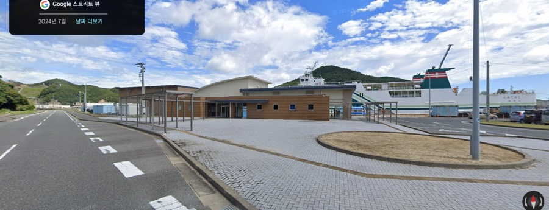

11/30(월) 히타카츠 당일 동선
내리자마자 전기자전거 → 야마토 → 오우라(쇼핑·점심) → 14:30 항구 복귀 · 버튼 누르면 구글맵 바로 열림
~10:53야마토 도착 목표
14:30항구 복귀 (늦어도 15:00)
16:10출항 → 17:40 부산
전체 경로 한 번에 열기 (항구 → 야마토 → 오우라 → 항구)
야마토 창구에서
송장번호
5004-6611-4083
쿨택배 · 착불 1,735엔 · 여권 + 서명 필요 · 박스는 그 자리에서 버려도 됨
この伝票番号の荷物を受け取りに来ました。
パスポートです。
(이 송장번호 짐 받으러 왔어요. 여권입니다.)
줄이 1시간 넘게 길면 쇼핑 먼저 하고 13:30~14:00에 다시 와도 됨 (영상 기준 14:20엔 줄이 없었음). 30분 안쪽이면 그냥 서기. 받기 전에는 항구로 가지 말 것.
엔화 현금 (약 2만 엔)
| 전기자전거 | 2,000엔 |
| 야마토 착불 | 1,735엔 |
| 출국세 + 터미널료 (귀국 수속) | 3,500엔 |
| 점심·여유분 | 나머지 |
쇼핑은 여권과 같은 명의 카드로, 엔화로 결제 (원화 결제 X). 매장마다 세금 빼고 5,000엔 넘어야 면세 환급, 영수증 챙기기.
항구 들어가서 순서
① 자전거 반납 (10초) → ② 짐 맡기기 전에 면세 키오스크(1층·2층)에서 여권 찍기 → ③ 출국 수속, 3,500엔 현금 → ④ 16:10 승선
배 못 구했을 때 (Plan B)
16:00 하카타행 페리 → 20:55 하카타 도착, 2등석 8,340엔. 출발은
국내터미널(국제터미널 아님, 남쪽으로 걸어서 약 7분).

연락처
좌표는 구글맵에서 확인함 (11/28). 자전거 길찾기가 일본에서 안 뜨면 도보 경로 그대로 따라가면 됨. 체크 표시는 이 폰에만 저장됨.